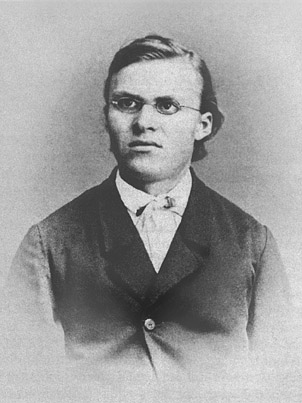
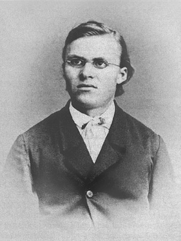
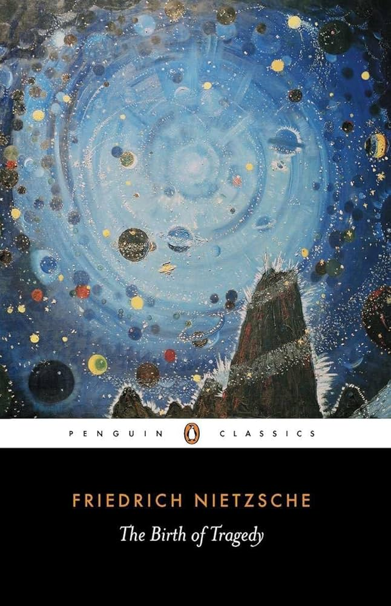

Friedrich Nietzsche

Welcome, this is a site dedicated to the German philosopher Friedrich Nietzsche. Here you will learn about his philosophy, his main works,biography and litle about his life.
Let's start with his biography
Friedrich Wilhelm Nietzsche[b] (15 October 1844 – 25 August 1900) was a German philosopher. He began his career as a classical philologist, turning to philosophy early in his academic career. In 1869, aged 24, Nietzsche became the youngest professor to hold the Chair of Classical Philology at the University of Basel. Plagued by health problems for most of his life, he resigned from the university in 1879, and in the following decade he completed much of his core writing. In 1889, aged 44, he suffered a collapse and thereafter a complete loss of his mental faculties, with paralysis and vascular dementia,[c] living his remaining 11 years under the care of his family until his death. His works and his philosophy have fostered not only extensive scholarship but also much popular interest. Nietzsche's work encompasses philosophical polemics, poetry, cultural criticism and fiction, while displaying a fondness for aphorisms and irony. Prominent elements of his philosophy include his radical critique of truth in favour of perspectivism; a genealogical critique of religion and Christian morality and a related theory of master–slave morality; the aesthetic affirmation of life in response to both the "death of God" and the profound crisis of nihilism; the notion of Apollonian and Dionysian forces; and a characterisation of the human subject as the expression of competing wills, collectively understood as the will to power. He also developed influential concepts such as the Übermensch and his doctrine of eternal return. In his later work he became increasingly preoccupied with the creative powers of the individual to overcome cultural and moral mores in pursuit of new values and aesthetic health. His body of work touched a wide range of topics, including art, philology, history, music, religion, tragedy, culture and science, and drew inspiration from Hebrew literature, Indian literature and Greek tragedy, as well as figures such as Zoroaster, Arthur Schopenhauer, Ralph Waldo Emerson, Richard Wagner, Fyodor Dostoevsky and Johann Wolfgang von Goethe. After Nietzsche's death, his sister, Elisabeth Förster-Nietzsche, became the curator and editor of his manuscripts. She edited his unpublished writings to fit her German ultranationalist ideology, often contradicting or obfuscating Nietzsche's stated opinions, which were explicitly opposed to antisemitism and nationalism. Through her published editions, Nietzsche's work became associated with fascism and Nazism. Twentieth-century scholars such as Walter Kaufmann, R. J. Hollingdale and Georges Bataille defended Nietzsche against this interpretation, and corrected editions of his writings were soon made available. Nietzsche's thought enjoyed renewed popularity in the 1960s and his ideas have since had a profound impact on 20th- and 21st-century thinkers across philosophy—especially in schools of continental philosophy such as existentialism, postmodernism and post-structuralism—as well as art, literature, music, poetry, politics and popular culture.
Photo
 



Books
Thus Spoke Zarathustra

This is a philosophical novel by German thinker Friedrich Nietzsche, which sets out his teachings, including the ideas of the superhuman, the “death of God,” and eternal recurrence. The narrative is told from the perspective of the fictional prophet Zarathustra, who, after ten years of seclusion, descends from the mountains to preach his ideas to the people. The book is written in a poetic, aphoristic form and consists of four parts.
The Gay Science

The Gay Science (or The Joyful Science) is a work by German philosopher Friedrich Nietzsche, published in 1882, which criticizes traditional morality and religion and offers a positive program for embracing life in all its fullness, including both pain and pleasure. In the book, Nietzsche formulates the famous aphorism “God is dead” and explores the themes of self-liberation and eternal recurrence.
Beyond Good and Evil
Beyond Good and Evil confirmed Nietzsche's position as the towering European philosopher of his age. The work dramatically rejects traditional Western thought with its notions of truth and God, good and evil. Nietzsche seeks to demonstrate that the Christian world is steeped in a false piety and infected with a 'slave morality'. With wit and energy, he turns from this critique to a philosophy that celebrates the present and demands that the individual impose their own 'will to power' upon the world.
The Birth of Tragedy: Out of the Spirit of Music
The Birth of Tragedy from the Spirit of Music is an aesthetic treatise by Friedrich Nietzsche (1872) in which he explores the origins of Greek tragedy, contrasting two principles: the Apollonian (order, harmony, plastic arts) and the Dionysian (chaos, ecstasy, music). Nietzsche argues that true Greek tragedy was born out of the synthesis of these two principles, and that its loss was due to excessive intellectualism and the development of other cultural forms. The book links these ancient ideas to contemporary culture and has had a profound influence on subsequent trends in art and philosophy.
Life
Born on 15 October 1844, Nietzsche grew up in the town of Röcken (now part of Lützen), near Leipzig, in the Prussian Province of Saxony. He was named after King Friedrich Wilhelm IV of Prussia, who turned 49 on the day of Nietzsche's birth (Nietzsche later dropped his middle name, Wilhelm). Nietzsche's great-grandfather, Gotthelf Engelbert Nietzsche (1714–1804), was an inspector and a philosopher. Nietzsche's grandfather, Friedrich August Ludwig Nietzsche (1756–1826), was a theologian. Nietzsche's parents, Carl Ludwig Nietzsche (1813–1849), a Lutheran pastor and former teacher, and Franziska Nietzsche (née Oehler) (1826–1897), married in 1843, the year before Friedrich's birth. They had two other children: a daughter, Elisabeth Förster-Nietzsche, born in 1846, and a second son, Ludwig Joseph, born in 1848. Nietzsche's father died of a brain disease in 1849, after a year of excruciating agony, when the boy was only four years old; Ludwig Joseph died six months later at age two. The family then moved to Naumburg, where they lived with Nietzsche's maternal grandmother and his father's two unmarried sisters. After the death of Nietzsche's grandmother in 1856, the family moved into their own house, now Nietzsche-Haus, a museum and study centre. Young Nietzsche, 1861 Nietzsche attended a boys' school and then a private school, where he became friends with Gustav Krug and Wilhelm Pinder, both of whom came from highly respected families. Academic records from one of the schools attended by Nietzsche noted that he excelled in Christian theology. In 1854 he began to attend the Domgymnasium in Naumburg. Because his father had worked for the state as a pastor, the now-fatherless Nietzsche was offered a scholarship to study at the internationally recognised Schulpforta. The claim that Nietzsche was admitted on the strength of his academic competence has been debunked: his grades were not near the top of the class. He studied there from 1858 to 1864, becoming friends with Paul Deussen and Carl von Gersdorff (1844–1904), who later became a jurist. He also found time to work on poems and musical compositions. Nietzsche led "Germania", a music and literature club, during his summers in Naumburg. At Schulpforta, Nietzsche received an important grounding in languages — Greek, Latin, Hebrew, and French — to be able to read important primary sources; he also experienced for the first time being away from his family life in a small-town conservative environment. His end-of-semester exams in March 1864 showed a 1 in Religion and German; a 2a in Greek and Latin; a 2b in French, History, and Physics; and a 3 in Hebrew and Mathematics. Nietzsche was an amateur composer. He composed several works for voice, piano, and violin beginning in 1858 at Schulpforta in Naumburg when he started to work on musical compositions. Richard Wagner was dismissive of Nietzsche's music, allegedly mocking a birthday gift of a piano composition sent by Nietzsche in 1871 to Wagner's wife Cosima. German conductor and pianist Hans von Bülow also described another of Nietzsche's pieces as "the most undelightful and the most anti-musical draft on musical paper that I have faced in a long time". While at Schulpforta Nietzsche pursued subjects that were considered unbecoming. He became acquainted with the work of the then-almost-unknown poet Friedrich Hölderlin, calling him "my favourite poet" and writing an essay in which he said that the poet raised consciousness to "the most sublime ideality". The teacher who corrected the essay gave it a good mark but commented that Nietzsche should concern himself in the future with healthier, more lucid, and more "German" writers. Additionally, he became acquainted with Ernst Ortlepp, an eccentric, blasphemous, and often drunken poet who was found dead in a ditch weeks after meeting the young Nietzsche but who may have introduced Nietzsche to the music and writing of Richard Wagner. Perhaps under Ortlepp's influence, he and a student named Richter returned to school drunk and encountered a teacher, resulting in Nietzsche's demotion from first in his class and the end of his status as a prefect. Young Nietzsche After graduation in September 1864, Nietzsche began studying theology and classical philology at the University of Bonn in the hope of becoming a minister. For a short time, he and Deussen became members of the Burschenschaft Frankonia. After one semester (and to the anger of his mother), he stopped his theological studies and lost his faith. As early as his 1862 essay "Fate and History", Nietzsche argued that historical research had discredited the central teachings of Christianity, but David Strauss's Life of Jesus also seems to have had a profound effect on the young man. In addition, Ludwig Feuerbach's The Essence of Christianity influenced young Nietzsche with its argument that people created God and not the other way around. In June 1865, at the age of 20, Nietzsche wrote to his sister Elisabeth, who was deeply religious, a letter regarding his loss of faith. This letter contains the following statement: Hence the ways of men part: if you wish to strive for peace of soul and pleasure, then believe; if you wish to be a devotee of truth, then inquire.... Arthur Schopenhauer strongly influenced Nietzsche's philosophical thought. Nietzsche subsequently concentrated on studying philology under Professor Friedrich Wilhelm Ritschl, whom he followed to the University of Leipzig in 1865. There, he became close friends with his fellow-student Erwin Rohde. Nietzsche's first philological publications appeared soon after. In 1865 Nietzsche thoroughly studied the works of Arthur Schopenhauer. He owed the awakening of his philosophical interest to reading Schopenhauer's The World as Will and Representation, later admitting that Schopenhauer was one of the few thinkers whom he respected, dedicating the essay "Schopenhauer as Educator" in Untimely Meditations to him. In 1866 he read Friedrich Albert Lange's History of Materialism. Lange's descriptions of Immanuel Kant's anti-materialistic philosophy, the rise of European materialism, Europe's increased concern with science, Charles Darwin's theory of evolution, and the general rebellion against tradition and authority intrigued Nietzsche greatly. Nietzsche would ultimately argue the impossibility of an evolutionary explanation of the human aesthetic sense. In 1867 Nietzsche signed up for one year of voluntary service with the Prussian artillery division in Naumburg. He was regarded as one of the finest riders among his fellow recruits, and his officers predicted that he would soon reach the rank of captain. In March 1868, while mounting his horse, Nietzsche struck his chest against the pommel and tore two muscles in his left side, leaving him exhausted and unable to walk for months. Consequently, he turned his attention to his studies again, completing them in 1868. Nietzsche also met Richard Wagner for the first time later that year.